데이원컴퍼니 × 국비지원
Google Flow
사용법 가이드
Google ImageFX / Whisk가 Google Flow로 통합됨에 따라,
Google Flow 인터페이스 화면 및 사용법을 안내드립니다.
🧭 수강생 여러분께
안녕하세요. 데이원컴퍼니 국비지원 입니다.3차시. Gemini와 Google AI 기반 이미지 영상 생성 — [Chapter 2. Google Labs 제대로 쓰기] 클립의 사용 툴 업데이트에 따른 추가 강의 자료이오니 꼭 확인해주세요.
📢 설정법 가이드는 Google Flow (26년 5월 19일) 기준으로 작성되었습니다.
💡 Google Flow 크레딧 안내
Google Flow 바로가기 : https://labs.google/fx/ko/tools/flow✅ Google Flow 무료 사용 시 1일 50 크레딧이 제공되며, 영상 제작 환경에 따라 최소 10 이상의 크레딧이 사용됩니다.
✅ Google Flow(플로우)에서 한 번에 생성할 수 있는 영상의 기본 길이는 최대 8초입니다.
무료 버전
50 크레딧 / 일
매일 자정 초기화
Google AI Plus
200 크레딧 / 월
AI 크레딧 월 제공
Google AI Pro
1,000 크레딧 / 월
AI 크레딧 월 제공
크레딧 관련 자세한 내용은 Google 공식 안내 페이지를 참고해주세요.
1 Google Flow 로그인 하기
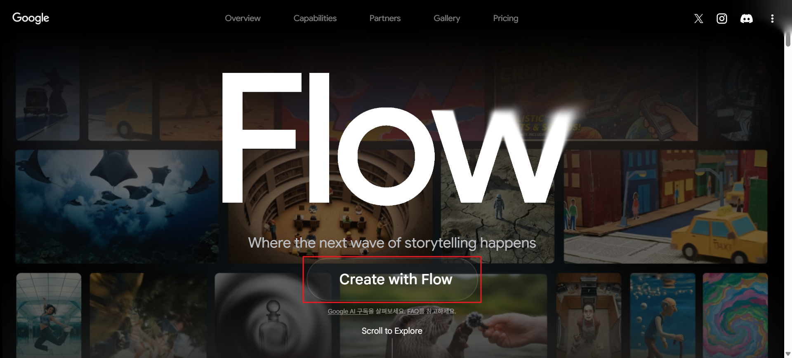
Google Flow 초기 접속 화면 — 중앙의 [Create with Flow] 버튼 클릭 후 Google 계정으로 로그인
2 Google Flow 메뉴 소개
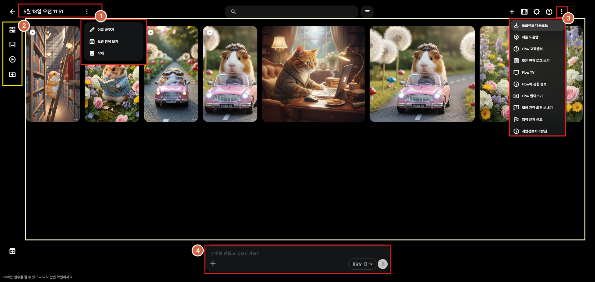
Google Flow 메인 화면 — 주요 메뉴 구성
Google Flow는 '프로젝트' 기반으로 생성 활동이 저장됩니다.
작업했던 이미지/영상 확인이 필요한 경우, 왼편 상단의 [←] 버튼으로 프로젝트를 확인해주세요.
작업했던 이미지/영상 확인이 필요한 경우, 왼편 상단의 [←] 버튼으로 프로젝트를 확인해주세요.
- ① 프로젝트 설정 : 프로젝트 이름, 보관 항목, 프로젝트 삭제 설정
- ② 프로젝트 내역 확인 메뉴 : 전체 보기(그리드) / 이미지 / 영상 / 업로드 파일 확인
- ③ 더보기 : 프로젝트 전체 다운로드, 도움말 및 고객센터 바로가기 등
- ④ 이미지/영상 생성 프롬프트 : 이미지/영상 생성을 위한 프롬프트 입력 메뉴
3 Google Flow 에서 이미지 생성하기
Google Flow에서는 희망하는 이미지 스타일에 대해 '프롬프트'에 모두 입력하여 진행됩니다.
이미지 스타일, 무드 등을 모두 '프롬프트'에 입력해주세요.
이미지 스타일, 무드 등을 모두 '프롬프트'에 입력해주세요.
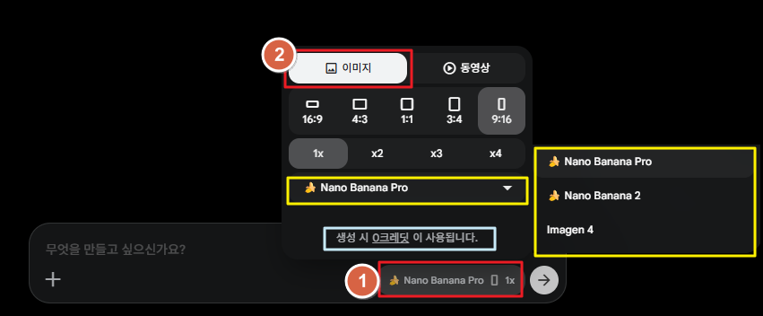
프롬프트 하단 [생성 환경 설정] 클릭 → [이미지] 선택 후 비율 및 수량 설정
1
프롬프트 하단 ① [생성 환경 설정] 버튼을 클릭합니다.
2
② [이미지] 선택 후 이미지 비율, 생성할 이미지 수량을 선택합니다.
- 생성할 이미지의 모델을 선택/변경할 수 있습니다.
- '생성 시 [ ] 크레딧이 사용됩니다' 문구로 소진되는 크레딧을 확인할 수 있습니다.
- 이미지 수정이 필요한 경우, 프롬프트 왼편의 [+] 버튼을 통해 이미지를 업로드하거나 기존 업로드한 이미지(에셋)를 선택할 수 있습니다.
이미지 수정 시, 프롬프트에 '지금 이미지에서 어떤 걸 수정해야 하는지' 명확하게 지시해주세요.
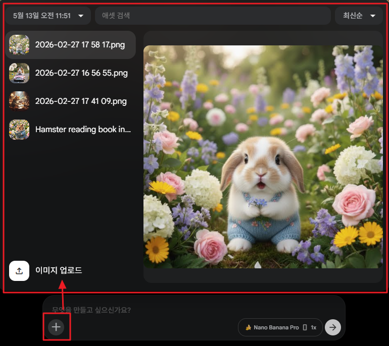
프롬프트 왼편 [+] 버튼 → 이미지 업로드 또는 기존 에셋 선택 → 수정 내용 프롬프트 입력
4-1 영상 생성하기 — 이미지(에셋)를 동영상으로
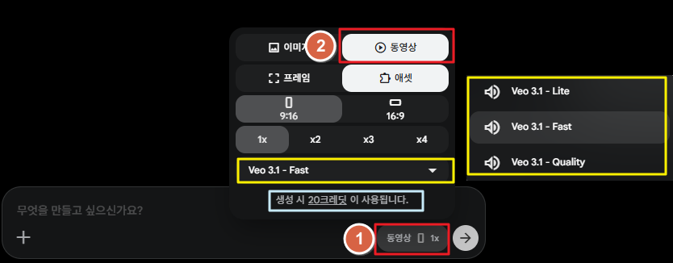
생성 환경 설정 → [동영상] → [에셋] 선택 후 영상 비율 및 수량 설정
1
프롬프트 하단 ① [생성 환경 설정] 버튼을 클릭합니다.
2
② [동영상] → [에셋] 선택 후 영상 비율, 생성할 영상 수량을 선택합니다.
- 생성할 영상의 모델을 선택/변경할 수 있습니다.
- '생성 시 [ ] 크레딧이 사용됩니다' 문구로 소진되는 크레딧을 확인할 수 있습니다.
3
프롬프트 왼편 하단 ③ [+] 버튼을 클릭하여 영상으로 만들 이미지(에셋)를 선택 또는 업로드한 후 '프롬프트'를 입력합니다.
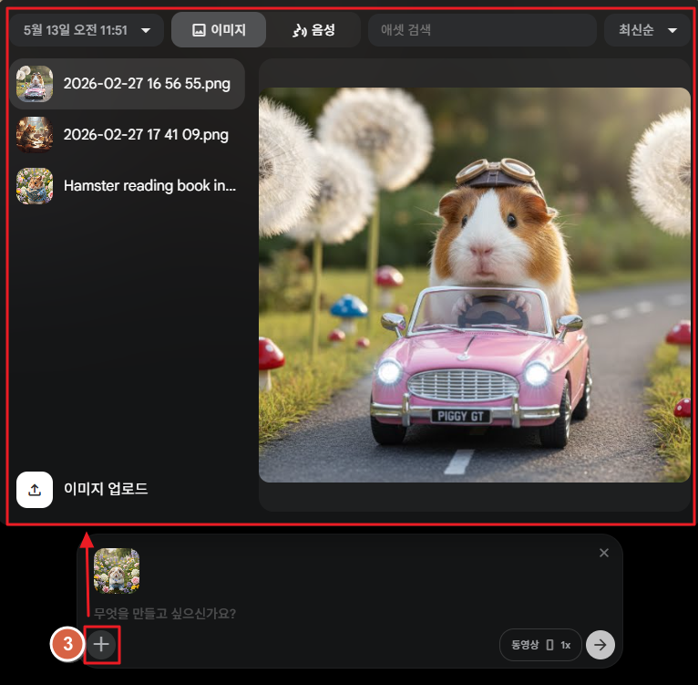
프롬프트 왼편 [+] 버튼 → 이미지(에셋) 선택 또는 업로드 → 프롬프트 입력
4-2 영상 생성하기 — 프레임을 동영상으로
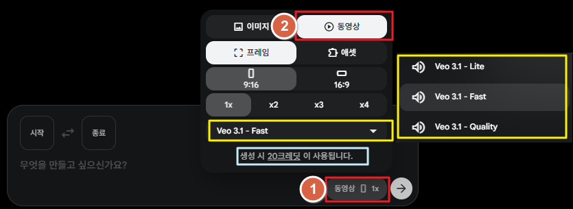
생성 환경 설정 → [동영상] → [프레임] 선택 후 영상 비율 및 수량 설정
1
프롬프트 하단 ① [생성 환경 설정] 버튼을 클릭합니다.
2
② [동영상] → [프레임] 선택 후 영상 비율, 생성할 영상 수량을 선택합니다.
- 생성할 영상의 모델을 선택/변경할 수 있습니다.
- '생성 시 [ ] 크레딧이 사용됩니다' 문구로 소진되는 크레딧을 확인할 수 있습니다.
3
프롬프트 왼편 ③ [시작] ↔ [종료]에 각각 영상의 첫 장면과 끝 장면에 반영될 이미지를 업로드 및 선택한 후 '프롬프트'를 입력합니다.
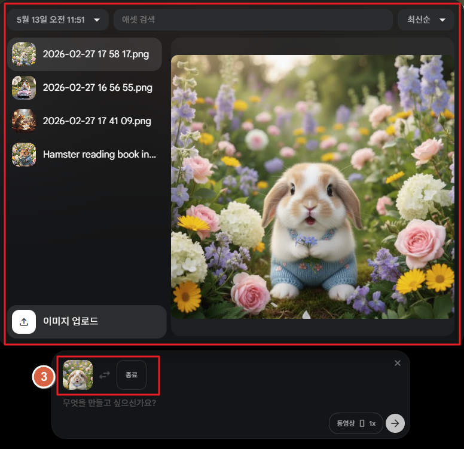
프롬프트 왼편 [시작] · [종료]에 각각 이미지 업로드 → 프롬프트 입력
5 생성한 영상/이미지 확인, 수정하기
생성한 영상/이미지를 클릭하면 오른편에서 최초 작업 및 수정 기록을 확인할 수 있으며, 변경이 필요한 내용에 대하여 추가 프롬프트로 수정 요청할 수 있습니다.
- 수정 기록 중 마음에 드는 영상/이미지를 선택하여 수정 작업을 반복할 수 있습니다.
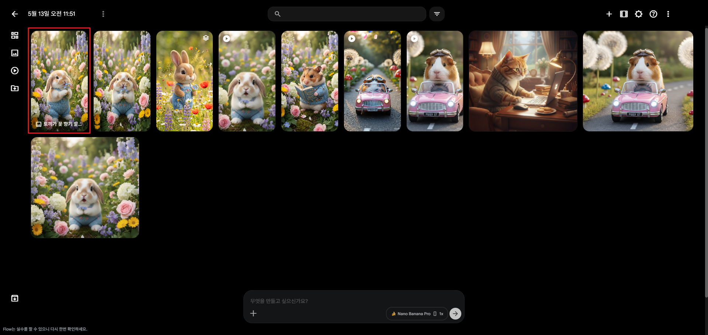
생성한 영상/이미지 클릭 → 오른편에서 최초 작업 및 수정 기록 확인
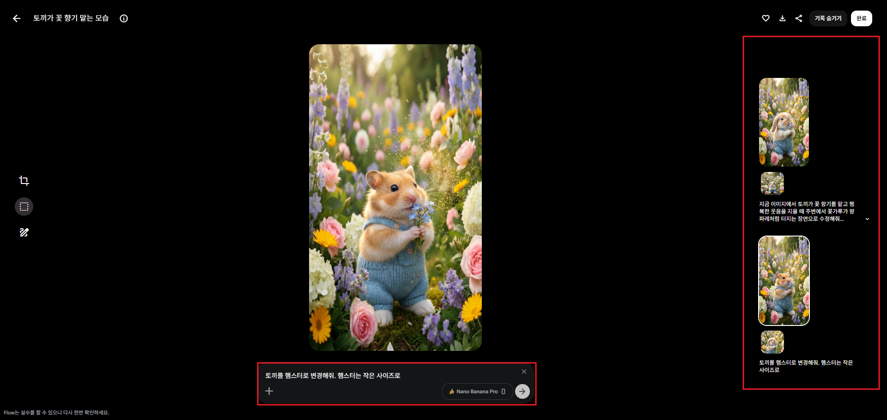
수정 기록 중 원하는 결과물 선택 → 추가 프롬프트로 수정 반복 가능
영상 수정의 경우, 영상에 대한 확장 / 삽입 / 삭제 또는 카메라 구도 변경 중 희망사항을 선택하여 수정 작업할 수 있습니다.
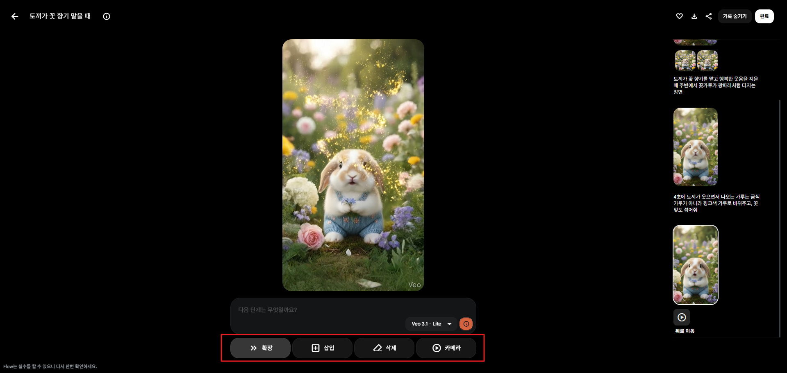
영상 수정 옵션: 확장 / 삽입 / 삭제 / 카메라 구도 변경 중 선택